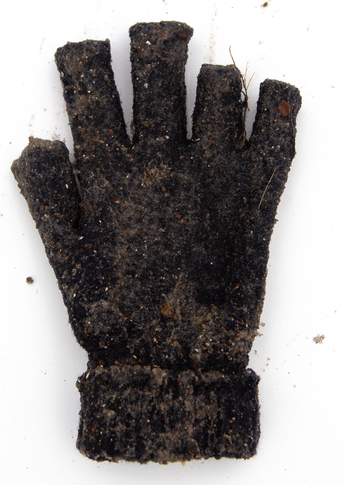
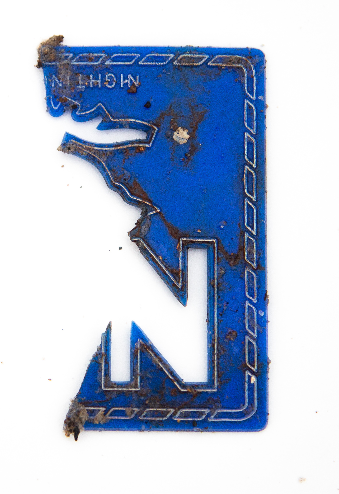
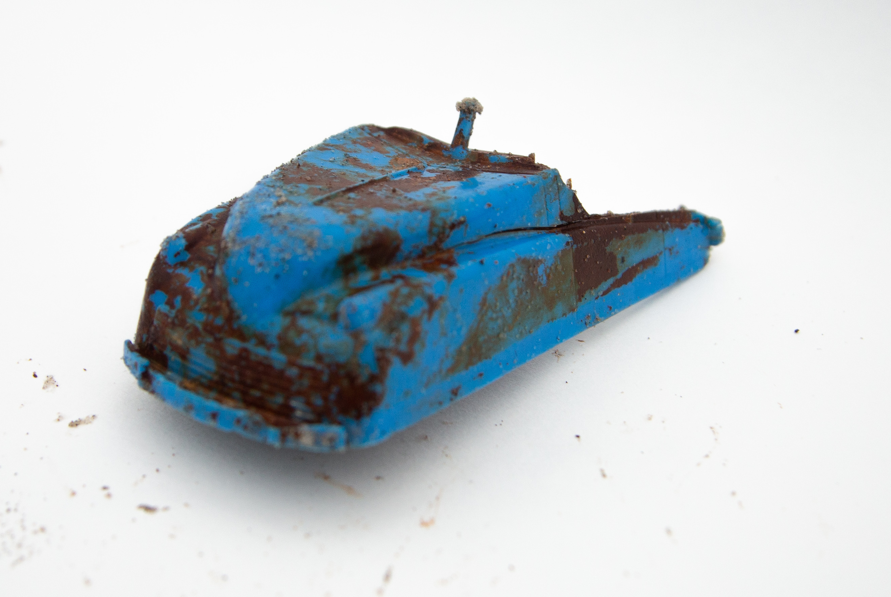
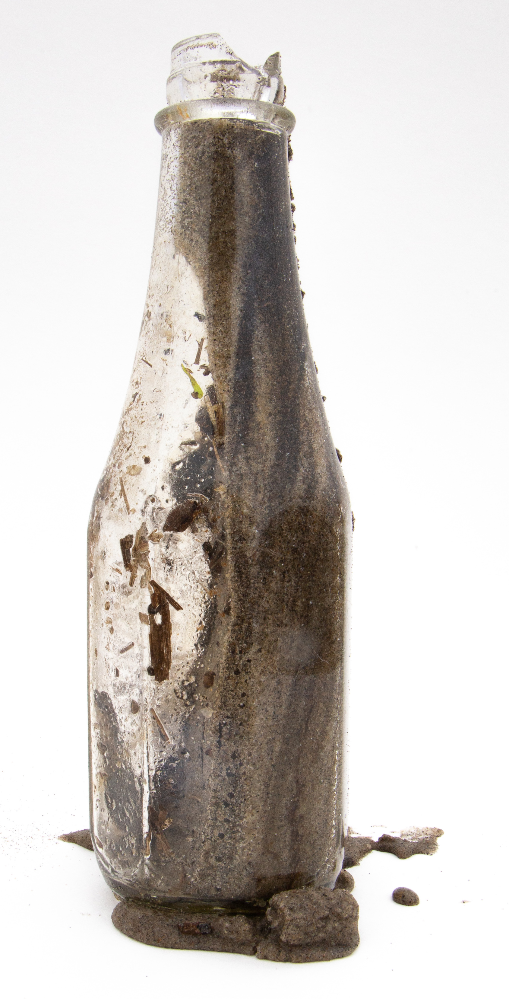

William Maier, a previous resident of the Barren island, described his childhood with memories of fishing, roller skating, swimming, eating wild-grown food, tracking turtles across the sand dunes, row-boating.
Opened in the 1880s, the school did not provide an eighth grade until 1918 when Miss Jane F. Shaw demanded the city for better eduation. Teachers would come to the island on weekdays and take the trolley home on weekends. For the longest time, P.S. 120 only had one teacher who taught all grades.